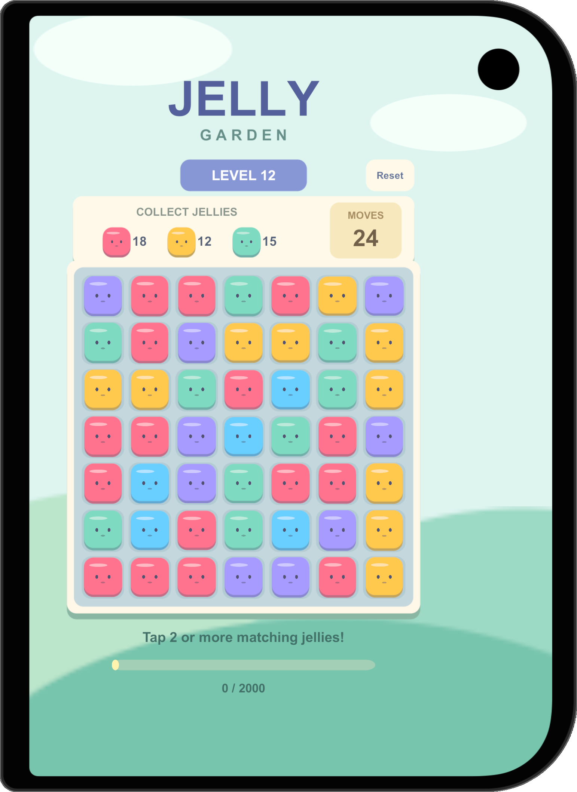
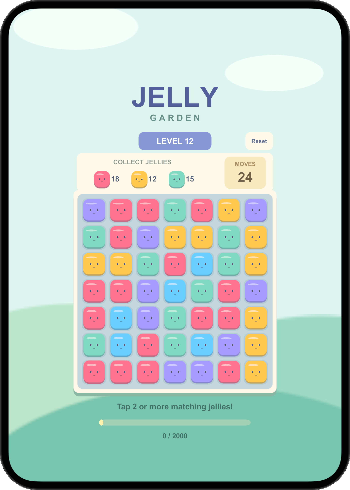
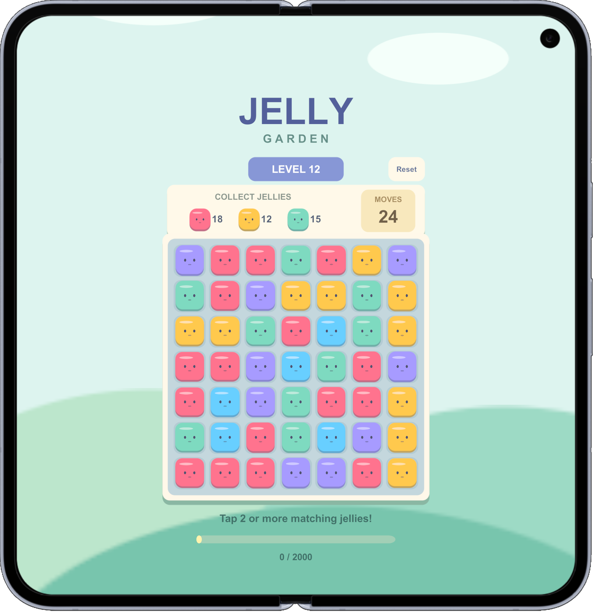
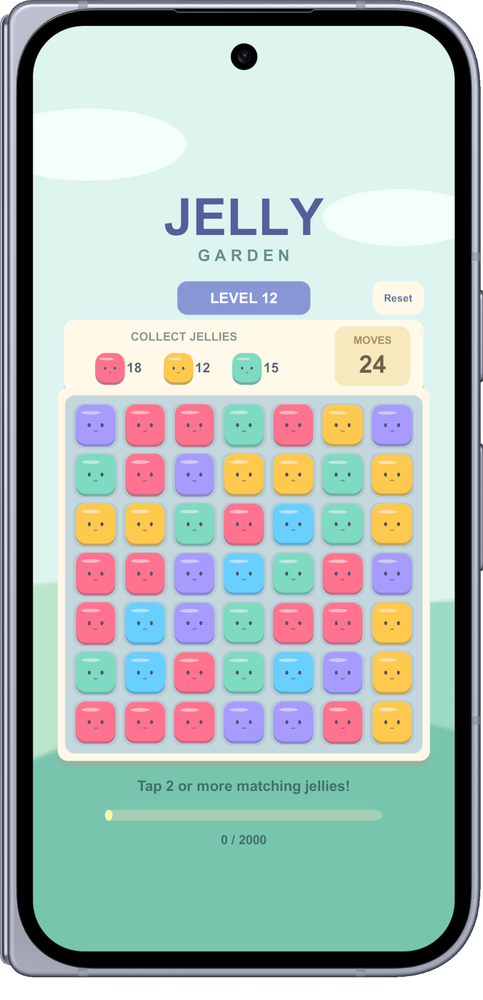
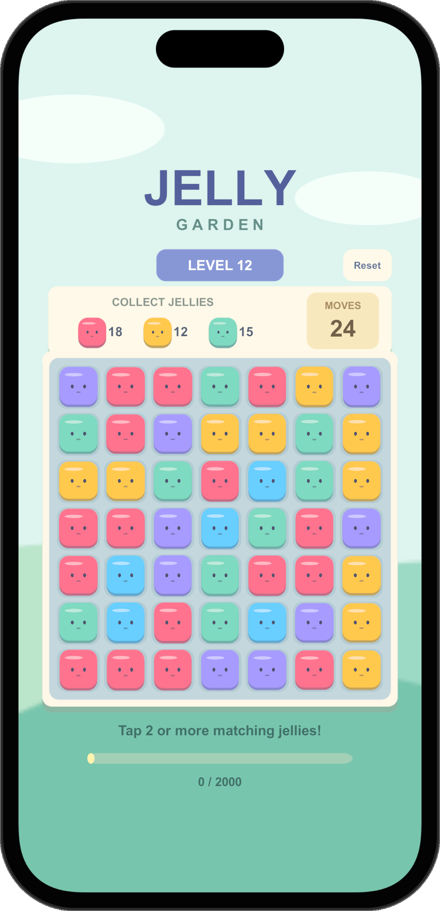

Framed device gallery · EditorCraft
Framed device gallery
iPhone Duo first. Five real Simulator captures with device surrounds and camera cutouts.
Click a device for the full-resolution PNG. Sequential captures; not physical-device photographs or an automatic UI audit.
All report previews
iPhone Duo — Outer ScreenPortrait · Framed Simulator export

iPhone Duo — Inner ScreenPortrait · Framed Simulator export

Google Pixel 10 Pro Fold — Inner ScreenPortrait · Framed Simulator export

Google Pixel 10 Pro Fold — Outer ScreenPortrait · Framed Simulator export

iPhone 16Portrait · Framed Simulator export